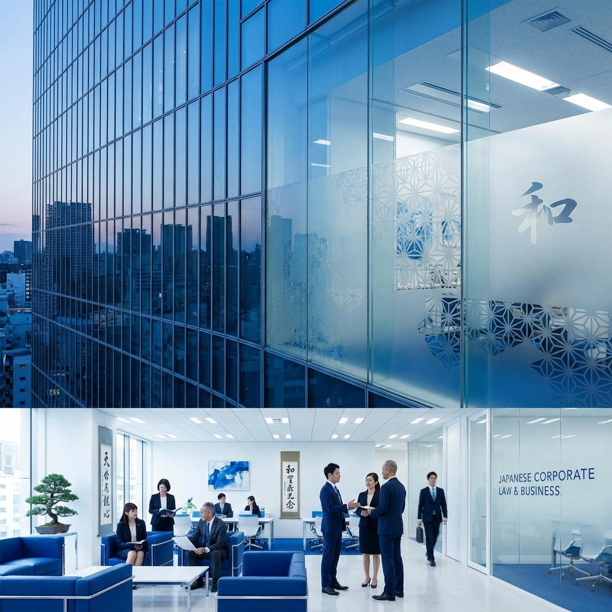

Juris Doctor
University of Washington School of Law
I am a 2L at University of Washington, School of Law. I work with clients at University of Washington's Student Legal Services helping students with their legal matters.
自己紹介
* * *
Adaptable J.D. candidate with extensive experience in legal analysis, document synthesis, and trial preparation. My professional background is defined by a meticulous attention to detail and a proven ability to manage high-volume caseloads under pressure. I am passionate about navigating the evolving legal landscape to provide effective advocacy, access, and support in both the public and private sectors.
Passionate about helping businesses and people.
Committed to providing high-quality legal services.
Adept at providing innovative solutions.
Adaptable to changing legal landscapes.
University of Washington School of Law
Florida Gulf Coast University
"Leading with integrity."
Eager and passionate J.D. candidate seeking to make an impact
University of Washington School of Law
Activities: Asian Pacific American Law Student Association | Latinx Law Student Association
Unique Coursework: Securities Regulation | Drafting Business Documents | Protection of Computer Software
Florida Gulf Coast University, Lutgert College of Business
Activities: President's List | Dean's List | Beta Gamma Sigma | The National Society of Leadership & Success
Illuminate Law Group | Bellevue, WA
Student Legal Services Law Office, University of Washington | Seattle, WA
Washington Journal of Social & Environmental Justice | Seattle, WA
Costello Law Firm, PLLC | Seattle, WA
I have direct experience in account management, dispute resolution, legal writing, legal research, client acquisition, recruiting, contract negotiation, and B2B and B2C communications. With extensive international experience, I have developed strong interpersonal and soft skills that enable me to connect with people from various cultures and backgrounds. In law school, I aim to deepen my understanding of the intersection between law, business, and ethics.
Navigating different legal systems and working with diverse client populations
Understanding how different legal systems compare with U.S. law
Japanese, Korean & English
LexisNexis, Westlaw, Adobe, Google Suite, HTML
Business, Regulatory Frameworks, Immigration & Employment
Art, Reading & Travel
A record of the Comments, Papers, and Memos I have written that pertain to legal theories, comparative law, business law, and policy matters.
Legal Research
A formal legal research memo that demonstrates analytical and advocacy skills.
Washington Journal of Social & Environmental Justice
An upcoming comment exploring the intersection of Constitutional Law and social justice issues, to be published in the Washington Journal of Social & Environmental Justice.

Japanese Law
A forthcoming paper analyzing corporate accountability frameworks within Japanese Law, comparing them with international standards.
Different ways for you to get in touch.
Email is always preferred for initial contact.
Seattle, Washington
+1 425-518-7496
cparra2@uw.edu